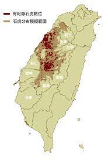

地區
在臺灣，石虎主要分布在苗栗、台中、南投，根據現有已知石虎分布區域推算，臺灣目前石虎的數量約有468至669隻 (姜博仁等，2015、和林良恭等，2016)。
然而，石虎就只侷限在這3個縣市嗎？
其實，在還沒有足夠的研究資料累計時，其他地區可能也有石虎存在，只是研究人員尚未進行調查，又或石虎族群數量較稀少，受限於時間、人力和物力等資源的限制，在有限的調查期間尚未調查到石虎。另外，有些區域雖目前沒有石虎分布，但卻是適合石虎生存的棲地，當石虎族群穩健恢復後，就能擴散且在這些區域存活。
為了更有效地進行石虎保育工作，特有生物研究保育中心(以下簡稱特生中心)於2020年整合近年來各研究單位自動相機拍攝到石虎樣點、過往石虎路殺或救傷紀錄、石虎危害通報監測確認等點位(如圖中有紀錄石虎點位)，利用MaxEnt (Maximun Entropy)方法進行分析，以石虎已知點位的環境資訊(如氣候、河流、植被、土地型態、海拔等)套疊到全台灣，預測出適合石虎的環境，以「石虎分布模擬範圍」呈現。從圖中可了解，就現有資料所預測出來的石虎可分布和利用的區域，最北從新竹，一路往南延伸到嘉義。如何保持棲地的連結性，讓石虎可以順利繁衍和擴散，是目前保育工作亟待努力的方向之一。
